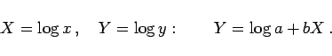

Inhalt Index DeskTop Bronstein

 Funktionen und ihre Darstellung Aufstellung empirischer Kurven Gebräuchlichste empirische Formeln Potenzfunktionen
Funktionen und ihre Darstellung Aufstellung empirischer Kurven Gebräuchlichste empirische Formeln Potenzfunktionen


Typische Kurvenverläufe für unterschiedliche Varianten des Exponenten b von dieser Gleichung zeigt die folgende Abbildung.
Kurven mit teilweise ähnlichem Verlauf liefern die folgenden Funktionen:
|  | (2.244b) |